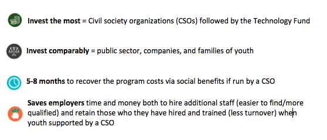

How to effectively launch youth into the workforce minimal cost, maximum employment
Photo by Kevin Case
Imagine if just about every single person in New York City were on the job hunt…at the same time!
That’s the case for youth in Latin America and the Caribbean: according to the International Labour Organization (ILO), 7.8 million of the region’s young people are looking for work. Youth unemployment for these youth ages 15-24 averages 13.4%, double the 6.3% general unemployment rate. This figure is particularly high for young women, at 17.2% versus 11.3% for young men.
Meanwhile, according to the 2015 Manpower Group survey, 42% of LAC employers reported difficulty filling jobs, specifically for positions for skilled tradesmen, technicians, sales representatives, office support staff, drivers, engineers, managers/executives, machine operators, accountants, and laborers.
In context of this skill mismatch, Microsoft and the MIF co-financed the Technology Fund for Youth Labor Intermediation Program, which was able to achieve employment for 40% of the 6,000 youth participating. This rate increased to 60% for youth who simply improved their software competencies. This program was executed by Fundación SES (Argentina) in partnership with 29 civil society organizations (CSOs) across nine very distinct countries.
To pinpoint what worked on the project level, Fundación SES prepared a report on “Lessons Learned: Youth Labor Intermediation in Iberoamerica.” The study pulls from the robust monitoring platform used by all the Technology Fund projects since their inception in 2012. This monitoring platform enables tutors, teachers, businessmen, and even the youth themselves to record data related to the project in real time. The study evaluates the economic costs and results of having CSOs as the principal actor carrying out youth labor intermediation services, and specifically analyzes the relationship between variables such as A) CSO institutional strength, B) level of youth vulnerability, and C) national context, in relation to the outcomes of each project.
Main Findings: Cost-Effective Labor Intermediation
Strengthen national contexts, as the more favorable the country context, the better the result and lower the cost of the project. Results demonstrated that more comprehensive employment public policies that promote youth inclusion in the workforce greatly improve labor insertion odds for youth, making the programs less costly. Numerous countries in the region have encouraged youth employment/internship targets for both the private and public sectors, enhancing opportunities for vocational and technical training.
Differentiate between but target all youth, as working with highly vulnerable youth does not increase project costs. Results indicated that youth exposed to all levels of vulnerability improved their potential professional trajectory, obtaining a job and/or enhancing the quality of obtained employment. Success relies on youth driving their training/occupational targets as well as the CSO creatively identifying locally relevant job opportunities.
Invest in institutional development of local facilitators (CSO), as implementing agencies with strong institutional development were able to achieve higher youth labor insertion rates while not incurring higher program costs (97% vs. 29% youth insertion rates, respectively). Institutional strengthening of CSOs is additionally economically prudent because the CSOs are inherently closer to the subjects and thus provide ideal mentorship/guidance regarding soft skills that are relevant to the local labor market.
Delineate clear roles, as effective labor intermediation requires collaborative effort from many players. Clarity about each actor’s function allows them to focus their investment in the correct arena to ensure the chain of labor intermediation performs at its optimum level. Including representatives from various economic sectors and unions is essential for further facilitating the exchange of information and reducing labor market rigidity.
Investment Snapshot: CSO Labor Intermediation Services
The complete results of the 2015 study were disseminated March 21 and 22 at the IberoAmerican Youth Labor Intermediation Workshopin Buenos Aires where there were over 97 participants from over 15 countries, including: national representatives from Argentina, Brazil, Chile, El Salvador, and Uruguay among others; regional representatives from SEGIB (Secretaría General Iberoamericana), ILO (International Labor Organization), CINTERFOR ( Centro Interamericano para el Desarrollo del Conocimiento en la Formación Profesional ), IIPE UNESCO, IILA (Instituto Italo-Latinoamericano), the MIF/IDB; private sector companies and multinationals such as Arcos Dorados, Manpower Group, Odebrecht, Hospital Italiano, Microsoft, Roman Organization, Maria Cher, and Companía de Café; and CSOs such as Jacobs Foundation, EUROSOCIAL, Lula Institute and Young Build, Microempresas de Antioquia Colombia, Fundación Esplai Barcelona, the Instituto Alianza de Brasil, Fundación Caritas, Fundación Forge and Fundación UOCRA Argentina, Funsalprodese El Salvador, El Abrojo de Uruguay, and Ser Familia of Bolivia. In line with the study, the event was intended to contribute to strengthening the areas of coordination between states, private sector companies, and CSOs to clarify the roles and responsibility of each actor in the process of employing youth. More information
Young people and their families are not the only ones suffering from lack of employment. Their inactivity translates to underperformance of the social and economic development of the country overall. The issue of youth labor intermediation becomes ever more relevant, as by 2020 Latin American and the Caribbean anticipate the largest number of young people ever seen in its history. To maximize the potential of this next generation of workers, we need to collaboratively and continuously work together and align supply to the demand.